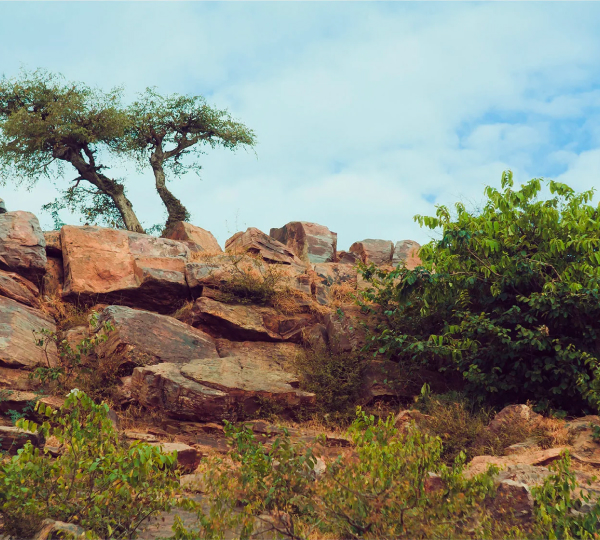
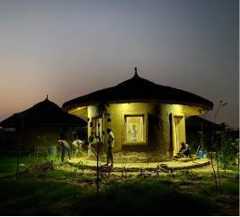

If you are walking on the parikrama road from the direction of Dana-ghati, once you enter the village of Aniyor, you need to walk approximately 300 meters, and you will see this turn to the left:

Make that turn and walk straight. After about 400 meters, you will reach our gates.
If you are driving, do not attempt to drive through the parikrama road. It is possible, but only for those who know well the winding paths of Govardhan, and even then, you might get stuck on a narrow street for a long time.
It is best to use the new road called Bypass Road (if you are coming from Vrindavan, the turn will be just before Radha-kunda).
Drive past the turn to Sri Radha Brij Vasundhara.

You need the next turn, which will be approximately 750 meters ahead.
Turn right, drive exactly one kilometer, and you are home.